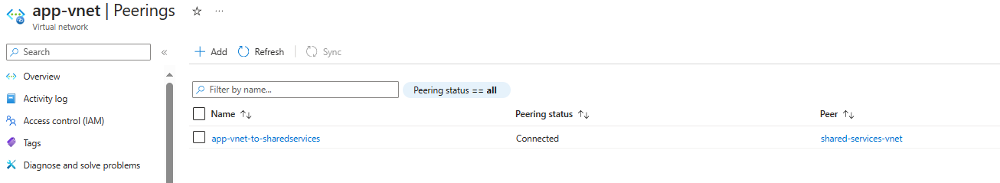
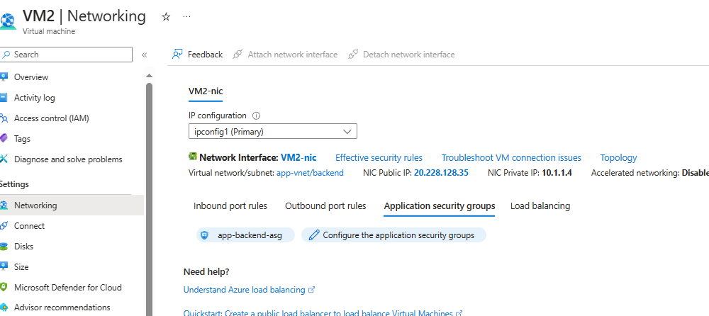
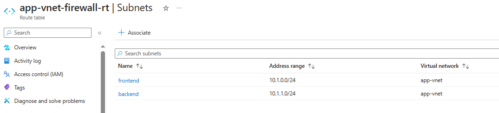
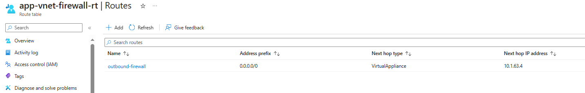
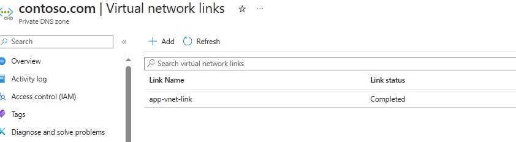

Following this learning path I was able to complete the guided project, and then later achieve the Configure secure access to your workloads using Azure networking applied skill certification
Resources used:
• Configure secure access to your workloads using Azure virtual networking learning path
After completing the learning path I then went through the guided project where I provided network isolation and segmentation for a web app and its associated backend
First I had to create:
- RG1 resource group
- app-vnet VNet
- 2 subnets, frontend (10.1.0.0/24) and backend (10.1.1.0/24)
- shared-services-vnet VNet
- 1 subnet, frontend (10.0.0.0/24)
I then set up peering between both of these VNets

Second, I created:
- app-vnet-nsg NSG and associating that with backend subnet of app-vnet
- app-backend-asg ASG
- Creating a rule in app-vnet-nsg to allow for SSH over port 22 to the ASG

- Create 2 VMs using the bicep template, and associating the VM2-nic with the ASG
Third I then created:
- AzureFirewallSubnet (10.1.63.0/24) subnet within app-vnet
- app-vnet-firewall firewall
- fw-policy firewall policy along with an application and network rule colletion, one application rule to enable website communication with an external server and another network rule to allow the webserver to communicate with a DNS server

Fourth I then created:
- app-vnet-firewall-rt route table
- Associating the route table with the frontend & backend subnet in app-vnet

- Adding a route so all traffic from the subnets are routed through app-vnet-firewall-rt

Finally I then created:
- contoso.com private DNS zone
- Virtual network link to app-vnet